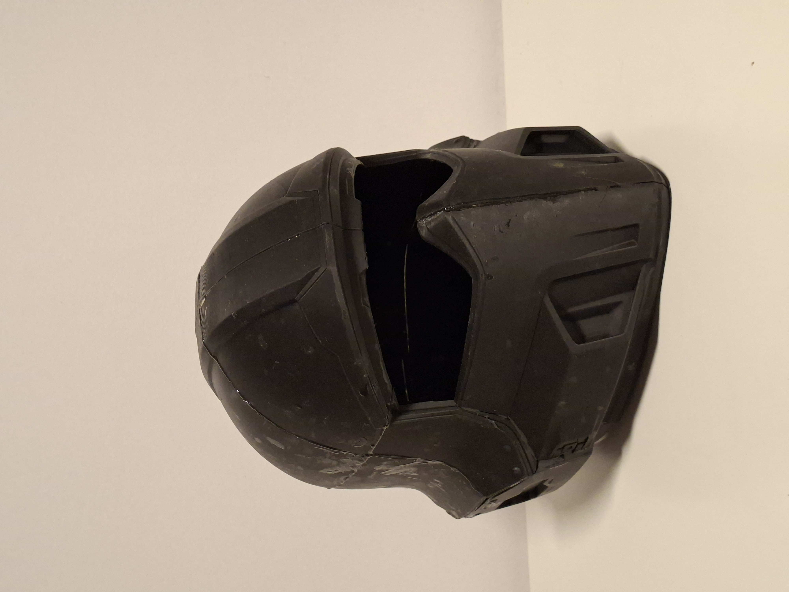
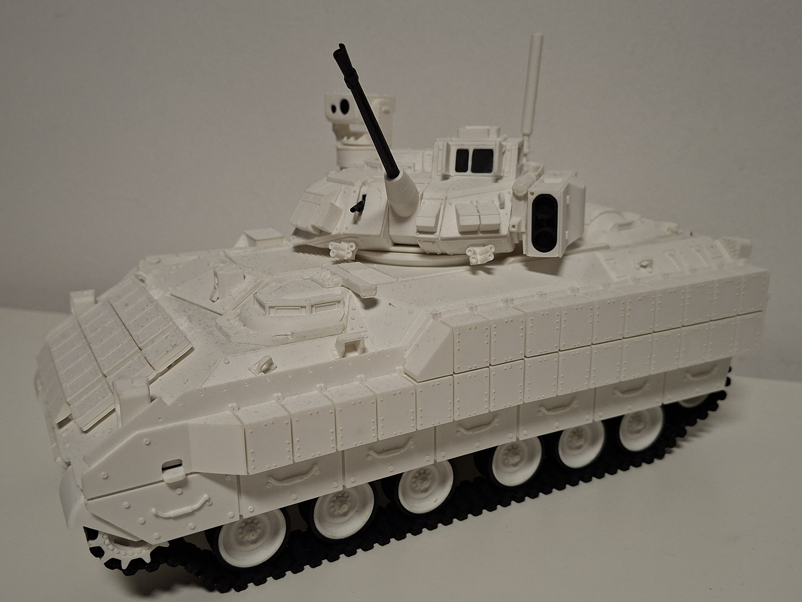
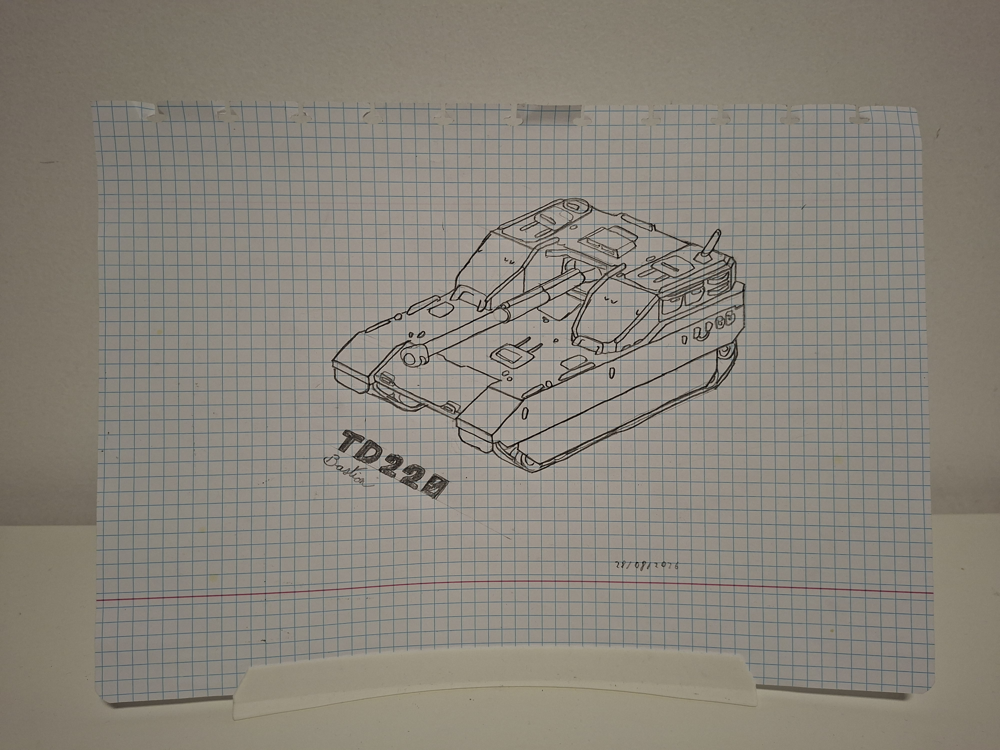

Op deze webpagina zal ik het hebben over mijn hobby's en interesses.
3D printen is een hobby waaraan ik begonnen ben een half jaar geleden, maar ik had al veel eerder interesse voor deze hobby.
3D modellen inspireren me zeer, vooral als deze hun origine vinden in mijn interesses (games, fossielen, enz.).
3D printen is mijn manier om deze interesses tot “leven” te brengen; het is een wonderlijk gevoel om de dingen die je op dagdagelijkse basis ziet in games of online, voor het eerst in het echt te zien.
Een voorbeeld hiervan is de “B01 tactical helmet”, van de game "Helldivers 2". Dit is mijn grootste project zover.

Dit stuk pantser is makkelijk te herkennen voor elke speler van dit videospel, het bracht me veel geluk om deze in het echt te zien.
Naast deze interesse, hou ik me ook veel bezig met militaire voertuigen.
Een voorbeeld van hiervan is de ‘Bradley IFV’ die ik geprint heb.

Kunst is de 2de hobby waar ik vervulling in vind. De redenen waarom ik graag teken liggen dichtbij mijn motivaties voor 3D printen; het verwezenlijken van ideeën en interesses.
Via deze hobby kan ik mezelf uitten door mijn ideeën op papier te zetten, zoals een 3D printer deze omzet tot plastic.
De onderwerpen die ik meestal teken zijn mijn interesses, die eerder zijn vermeld.
Ik teken vooral fossielen, militaire technologie, mensen, dieren, enz.
Ik vind veel schoonheid in deze onderwerpen, deze zet ik graag op papier.
Een recent voorbeeld dat ik getekend heb is de "TD 220 Bastion".

De laatste hobby waar ik aan deelneem zijn games, wat al opviel.
Games zijn een manier van zelf uiting voor mij; in deze digitale werelden kan ik de persoon zijn die ik echt wil zijn, zonder enige limieten.
In deze activiteit vind ik veel vervulling; ik kan activiteiten uitoefenen die onmogelijk zijn in het echte leven, daarnaast ontmoet ik constant nieuwe mensen, maar kan ik ook constant tijd spenderen met mijn vrienden. Het is wellicht mijn belangrijkste bron van sociaal contact.
Via deze hobby kan ik ook mijn ideeën verwezenlijken; ik heb veel ervaring met games waar de focus ligt op creëren van machines, voertuigen en dergelijken via in-game aangeleerde logica.
Games zijn altijd al een grote motivatie geweest voor programmeren, ze zijn wat me origineel geïntroduceerd hebben tot het onderwerp. Zonder games had ik waarschijnlijk nooit deze opleiding leren kennen, deze zijn dus van groot belang voor mij.
Wat opvalt is dat al deze hobby’s één ding in gemeen hebben; het verwezenlijken van mijn ideeën.
Dit is één van mijn grootste motivaties wanneer het komt tot programmeren; ik wil mijn eigen ideeën tot leven brengen en ik kan programmeren gebruiken als “tool” hiervoor. Deze opleiding maakt dus eigenlijk deel uit van mijn hobby’s, het is nog een manier om mezelf te kunnen uitten en vervulling te vinden.
Ik hoop nog via programmeren vele persoonlijke projecten te verwezenlijken tijdens mijn carrière.